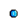
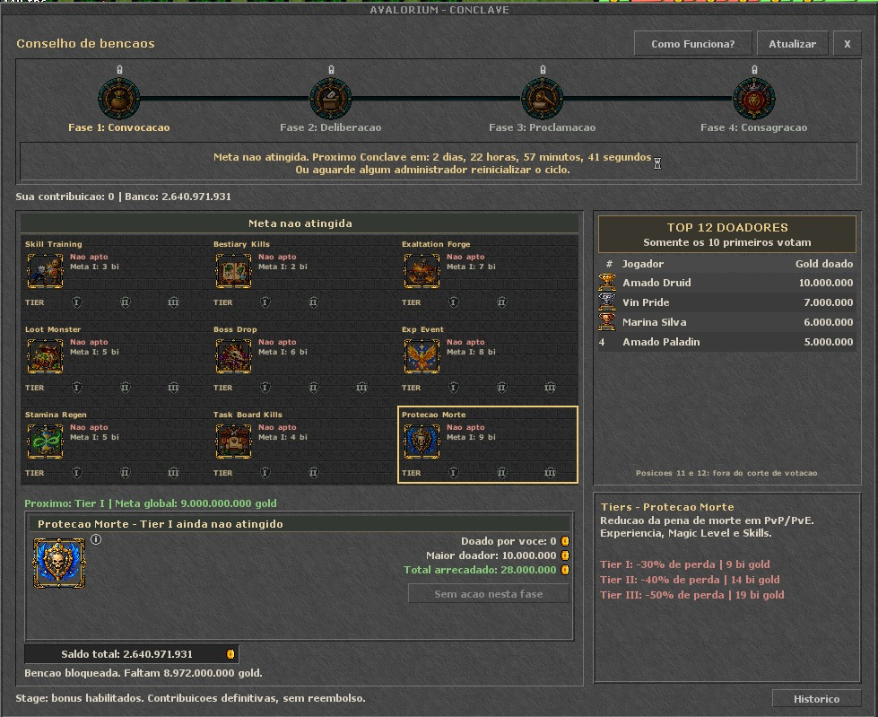

Bônus e metas
Cada meta corresponde ao total arrecadado por todos os jogadores. Ao alcançá-la, o tier entra na votação. Apenas o bônus vencedor é ativado.
| Bônus e efeito | Tier I | Tier II | Tier III |
|---|---|---|---|
| Task Board KillsCada criatura derrotada contabiliza mais kills nas tasks do Task Board. | 2×  Meta: 4 kkk | 3×Meta: 9 kkk | — |
| Bestiary KillsCada criatura derrotada credita mais kills ao Bestiary. | 2×Meta: 2 kkk | 3×Meta: 5 kkk | — |
| Skill TrainingAcelera o progresso no treinamento de skills. | +10%Meta: 3 kkk | +25%Meta: 5 kkk | +50%Meta: 10 kkk |
| Exp EventAumenta a experiência recebida ao derrotar monstros. | +40%Meta: 8 kkk | +50%Meta: 14 kkk | +60%Meta: 20 kkk |
| Loot MonsterAumenta o loot obtido de monstros comuns. | +30%Meta: 5 kkk | +40%Meta: 8 kkk | +50%Meta: 15 kkk |
| Stamina RegenAcelera a regeneração online em Protection Zone, banheiras e Training Dummy. A stamina continua limitada a 42 horas. | +25%Meta: 5 kkk | +50%Meta: 12 kkk | +100%Meta: 20 kkk |
| Proteção MorteReduz a perda de experiência, magic level e skills ao morrer. Não protege itens nem equipamentos. | −30%Meta: 9 kkk | −40%Meta: 14 kkk | −50%Meta: 19 kkk |
| Exaltation ForgeSoma o bônus à chance de sucesso na fusão (ex.: 40% vira 45% com o Tier I) e reduz a chance de perder tier. | +5% de sucesso−20% na chance de perder tierMeta: 7 kkk | +10% de sucesso−40% na chance de perder tierMeta: 14 kkk | — |
| Boss DropAumenta o drop das recompensas individuais dos bosses. | +30%Meta: 6 kkk | +40%Meta: 12 kkk | +50%Meta: 18 kkk |
Como funciona
Convocação 4 dias
Doe Crystal Coins. A arrecadação coletiva libera as opções e os tiers; o total doado por cada jogador forma o ranking.
Deliberação 12 horas
Os 10 maiores doadores votam uma vez, sem possibilidade de mudar o voto. A contagem é pública, mas os nomes dos votantes são ocultos.
Desempate até 30 minutos
Se houver empate, o 1º colocado escolhe entre os empatados. Caso não escolha no prazo, o sistema sorteia.
Proclamação 12 horas
O resultado é anunciado antes de o bônus começar a valer.
Consagração
O bônus vencedor fica ativo até o fim do ciclo semanal. Então começa um novo Conclave.
Qualquer jogador que tenha doado pelo menos 10% do total final arrecadado, respeitado o mínimo pessoal de 1 Crystal Coin. Se o total for 10 bilhões, sua contribuição precisa ser de 1 bilhão.
Se nenhuma meta for atingida, não há bônus no ciclo. Se houver opções liberadas e ninguém votar, o sistema sorteia uma delas.
Como participar
Abra o Conclave com !conclave e acompanhe a fase atual. As doações são definitivas: confira o valor antes de confirmar.
!conclaveAbre o Conclave!conclave statusFase, arrecadação e sua contribuição!conclave bonusBônus, metas e IDs para votar!conclave topRanking dos doadores!conclave doar VALORInicia uma doação!conclave votar IDVota durante a DeliberaçãoConfirme a doação ou o voto quando o jogo solicitar. O saldo do banco é usado primeiro; se necessário, o restante sai das moedas carregadas pelo personagem. Moedas no depot ou stash não são consideradas.
Interface do Conclave
Na tela do jogo, acompanhe as fases, o ranking, as metas e o bônus selecionado.
